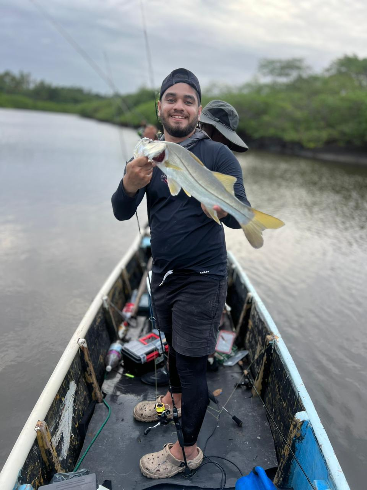

Cyl Farney
O caiaqueiro das galhadas
Cyl leva presença forte de água e leitura de estrutura apertada. É o nome ligado à pescaria de galhadas, ao controle fino de aproximação e à insistência onde muita gente já teria passado reto.
Caiaque
Galhadas
Aproximação silenciosa